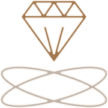

01

Сертификация FSSC 22000
02

Анализ поступившего сырья
03

Изготовление продуктов в строгом соответствии с рецептурами
04

Шоковая заморозка
05

Металлодетектор на выходе с линии
06

Лабораторные исследования
07

Дегустация каждой произведённой партии
08